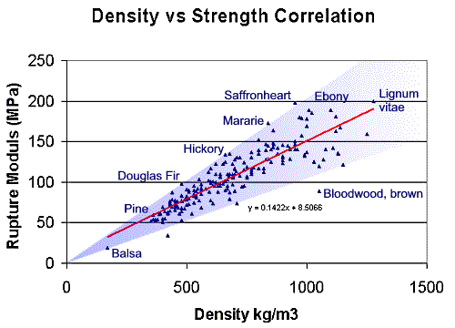
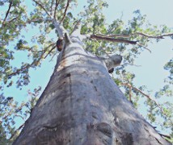
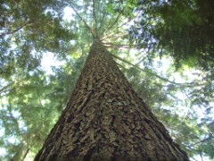

COPYRIGHT Tim Lovett © June 2004, Sept 04.
.
.
.
Once upon a time there was an amazing timber called "gopher wood",
far stronger than anything we have today...
Not likely.
The strength of seasoned timber is related to density. A dense timber simply has more stuff in it, cellulose, lignin etc, built into heavier-walled cells. There is no reason to expect that there exists some magical timber that outperforms all the others by orders of magnitude. While there are differences in workability, fungal attack & seasoning stability, generally speaking the strength of commercially useful timber is proportional to density. That's it.
And you can't get much more dense than the heavyweight eucalypts, Nigerian ebony or the famous Lignum-vitae. For example, the Australian Grey Ironbark tips the scales at 1120 kg/m3 (dry) and has metal-like strength (MOR = 185MPa), almost double that of European Oak and American White Oak. Old Ironbark must be cut with a tungsten-tipped blade. Could Noah build a huge boat out of something far stronger than modern timber? Is it even possible for timber to get much heavier and stronger than this? Obviously not by much.

Density vs Strength. (Based on data from Ref 5) Is gopher wood on this graph somewhere? It seems unlikely it could lie anywhere outside this range from balsa to lignum-vitae. And most of the extremely high strength timbers over 150MPa MOR are troublesome to season and difficult to work.
So what is Gopher wood?
There is one verse containing the word gopher . Here it is: (KJV)
Gen 6:14 Make thee an ark of gopher wood; rooms shalt thou make in the ark, and shalt pitch it within and without with pitch.
The word gopher is unclear, "no Hebrew expert knows for sure what gopher wood is in modern terminology". (Ref 2). In fact, gopher is barely a Hebrew word at all, looking very much like a foreign word included in the text. Others say it could be work of a careless scribe who meant to write kopher (covering or pitch), but everyone thought he wrote gopher.
The leading suggestions for the meaning of gopher wood are wood identity, spelling mistake, squared beams and lamination. Others have been suggested, such as a type of seasoning process or even the outlandish claim that the ark was made of reeds.
1. A species or type of wood.

Bluegum Sydney Australia. Photo Tim Lovett 2004
This idea suggests the "gopher tree" was the only timber Noah was allowed to use. "Evidently some form of dense or hard wood" (Morris Ref 4). A heavy robust timber is a logical choice for a big boat structure, especially in a vessel that is volume limited rather than space limited. Since it is unlikely there has ever existed a timber that totally outperforms all others, there is every chance that the second best timber would do. Considering that gopher wood is almost certainly below the Ironbark standard, many other timbers may have made the grade.
But building a ship entirely from a single species is not ideal, timber ships are more likely to employ a variety or timbers. If gopher wood was a great timber for frames (strong), it might be an overkill to make Noah saw his way through acres of the stuff just to get some basic decking and lining boards. The Ark was only made for a single voyage after all.
However, if gopher refers to a timber group with a variety of properties suitable for every purpose, then Noah had to sort this out anyway, so it doesn't really help much. Even for us today, the word is completely useless if it refers to an unidentified timber type. One word translated carefully for 4500 years. Might as well call it Cyprus or something equally silly.
The gopher tree interpretation could be explained by flora re-distribution (or ark transport) due to the flood. Since the word is obscure, perhaps the tree was no longer identified after the flood, causing it to disappear from normal use - a plausible outcome if the original gopher forest took root later in a place like Australia or America.

Western Hemlock Seattle USA. Photo Tim Lovett 2004
The idea of specifying a special marine timber does make sense. There are many factors influencing the choice of timber for boat-building. The timber must have the usual mechanical properties such as strength, but there are many other factors involved. Critical areas (like the hull) require a timber that is available as a clear grade in adequate sizes, has suitable workability, responds well to seasoning, and is dimensionally stable over a long construction timescale. It is conceivable that these requirements were beyond Noah at the time, so God spelled out which tree He wanted. In fact, these requirements also mean that the highest strength timber is almost certainly excluded due to their inherent difficulties with seasoning, working qualities and shrinkage. It is interesting to note that the ancient Greek trireme was constructed with green timber that was designed to shrink. Also, boats cannot be built with timber that is too dry (low moisture content) because the wetted hull will swell excessively. The opposite is also a problem, too green and the timber will shrink badly during construction. A stable humidity and lack of harsh sunlight and rain periods, along with a relatively constant temperature and mild seasonal adjustments would help Noah's ship behave itself over the construction period. (Ref 4)
2. A Spelling Mistake


Did kopher become gopher? One would expect a scribe to make an error the other way round - a foreign word turning into a familiar word (gopher becomes kopher). Considering that this is the sole appearance of the word in the whole bible, this is a big claim - and untestable. There would need to be some collaborative evidence to label this a text error. Simply claiming the word looks like something else is insufficient evidence. Did the scribes have a lot of trouble mixing up g & k? Surely the next scribe would spot the imaginary word gopher and go back to kopher. Besides, if kopher was the original, the verse would have been "Make yourself an ark of pitched wood; make rooms in the ark, and cover it inside and outside with pitch." Seems to be bordering on tautology.
3. Squared Beams
Easton's Bible Dictionary lists the Septuagint (LXX.) translation of gopher wood as "squared beams." The later Vulgate then translated "squared beams" as "planed wood."
You can't build a ship using un-squared wood anyway, apart from some of the internal members perhaps. Once again, it doesn't really help Noah much, or anyone else for that matter. (Except perhaps to eradicate the ideas of reed barges and crude rafts)
Another problem with this idea is how gopher could have become an obscure word. Obviously timber gets squared in any civilization so it should never have become an obsolete word. Besides, there is a perfectly good Hebrew word for 'squared'; raba.
 raba` {raw-bah'} to square, be squared (Strong's 07251)
raba` {raw-bah'} to square, be squared (Strong's 07251)
For example, Ezekiel 41:21 The posts of the temple squared (07251), and the face of the sanctuary...
One would expect the LXX authors to have known this of course. Perhaps there is some suggestion of a different type of 'squaring'. Or perhaps the LXX authors were "off the beam" on this one.
4. Wafers or Lamination
"Some researchers have suggested that "gopher" may have referred to a lamination process, which might have been necessary considering the huge size of the ark (450 feet long or more). If true, the correct translation would be "laminated wood." The Christian Apologetics & Research Ministry suggests that the true meaning of the word "gopher" may be found in a modern dictionary, and that forms of the word may still be in use today. "In the Concise Oxford Dictionary 1954 edition under the word 'gofer, gaufre, goffer, gopher, and gauffer see also wafer' it speaks of a number of similar things ranging from wafers as in biscuit making (layers of biscuit) or in a honeycomb pattern, to layers of lace in dressmaking, and hence goffering irons to iron the layers of lace." (Ref 1)
In some ways it looks like lamination argument might hold water;
But the question might arise as to the extent of lamination. While the hull planking is a prime candidate, there is no need to laminate everything (unless perhaps the entire ark must be constructed without metal - a somewhat arbitrary limitation). To allow partial lamination here would counter the argument against #1 that only a single species must be used throughout the vessel.
If the gopher/wafer connection is based on nothing more thinness of wood, Hebrew has a word for timber boards, qeresh {keh'-resh} implying splitting off. This weakens the case for the lamination idea unless gopher was referring to the end result of lamination rather than the individual boards within the member. In this case gophering might suggest exactly that.
5. An Ark of Reeds?
Amazingly, some are convinced that gopher wood stands for 'reeds'. This idea would not be worth mentioning except that it has been proposed by several commentators. To get 'river reed' out of 'gopher wood', the following details need to be overlooked.
It has even been suggested that the ark may have been a flexible vessel. This runs counter to common sense, ignores the structural requirements for multiple decks and seems to imply the ark sat high in the water (how else could a flexible wall be made watertight?). There appears to be no reason to take this idea seriously, it looks like the idea of a reed barge is grasping at straws.
Conclusion
It looks like the best contenders for gopher are "wood type" or the "lamination" concept. Perhaps we can ignore the spelling mistake suggestion, and the squared beams idea makes little sense when there is a real Hebrew word for that. No comment is necessary on the reed ark.
1. Gopher Wood http://christiananswers.net/q-eden/gopherwood.html Paul Taylor. The Oxford English Dictionary actually says the following;
Gofer. Honeycomb, thin cake; ultimately of low German origin: see Wafer and Waffle. A thin batter cake on which a honeycomb pattern is stamped by the iron plates between which it is baked... also gophering iron: the implement in which 'gofers' are baked. Goffer, gauffer. Also gopher, gofer, gaufre. Adaption of French gaufrer to stamp or impress figures on cloth, paper, etc. with tools on which the required pattern is cut. The usual sense of the English word is ... to make wavy by means of heated goffering-irons; to flute or crimp (the edge of lace, a frill, or trimming of any kind). Goffered. 1. Of frills, etc.: Fluted, crimped. 2. Bookbinding and printing. Embossed or impressed with ornamental figures, esp. goffered edges.
The general idea seems to be a pressing operation for thin material (batter cake or waffle, cloth, paper), often in the presence of heat. While somewhat tenuous, perhaps there is similarity between pressing book covers and laminating timber using heated pine tar or rosin adhesive (pitch). Maybe.
2. Comments regarding the lack of linguistic support for a lamination interpretation http://www.answersingenesis.org/docs/526.asp
3. Blue Letter Bible. "Dictionary and Word Search for 'gopher (Strong's 01613) ' " . Blue Letter Bible. 1996-2002. 7 Jun 2004. <http://www.blueletterbible.org/cgi-bin/words.pl?word=01613&page=1>
4. AS 1738: Timber for Marine Construction. Australian Standards
5. Characteristics, properties and uses of timbers: Vol 1 South-east Asia, Northern Aust and Pacific. W.G.Keating, CSIRO 1982